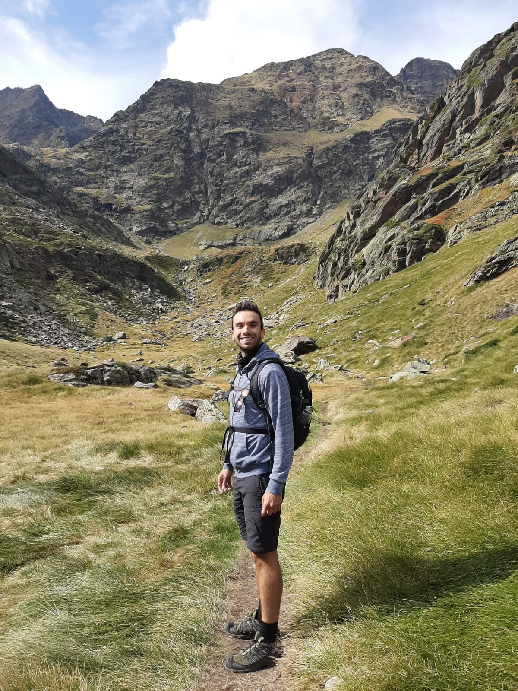

Ciao!
My name is Loris, I am an Italian descendent of Cristoforo Colombo on a quest to grocery shop some Indian spices across the sea and accidentally discover new worlds! Even though originally from Ravenna on the Adriatic coast, I can say to belong to the Dolomites mountains, one of the most beautiful places on planet Earth. After working 5 years locked in the metro-boulot-dodo routine (French for commute, work and sleep 😆), I decided to become one of the first digital nomad aerospace engineer, heading towards unknown cities accompanied by my laptop. While traveling to about 30 countries in my early 20s, I realized the pleasure of living a country rather than just visiting it.
That is the main objective of the voyage I find myself in. I intend to visit few corners in the world, stop and wander, while guaranteeing myself enough financial security to continue as long as I feel it. At the same time, I am trying to build a second career in tourism, organizing one-in-a-lifetime experiences to my friends and other fellow travellers, but also producing some content with the first intention of creating memories rather than making it a business. If you want to know more about the genesis of this project, you can give a read to this article in my blog.
If you want to travel with me, give me or ask for an advice, or just say hi, click the Whatsapp icon !
I hope to see you somewhere in this world. Don't forget to respect it and mostly to enjoy. Life is too short to not spend it fighting for and doing what we like.
My name is Loris, I am an Italian descendent of Cristoforo Colombo on a quest to grocery shop some Indian spices across the sea and accidentally discover new worlds! Even though originally from Ravenna on the Adriatic coast, I can say to belong to the Dolomites mountains, one of the most beautiful places on planet Earth. After working 5 years locked in the metro-boulot-dodo routine (French for commute, work and sleep 😆), I decided to become one of the first digital nomad aerospace engineer, heading towards unknown cities accompanied by my laptop. While traveling to about 30 countries in my early 20s, I realized the pleasure of living a country rather than just visiting it.
That is the main objective of the voyage I find myself in. I intend to visit few corners in the world, stop and wander, while guaranteeing myself enough financial security to continue as long as I feel it. At the same time, I am trying to build a second career in tourism, organizing one-in-a-lifetime experiences to my friends and other fellow travellers, but also producing some content with the first intention of creating memories rather than making it a business. If you want to know more about the genesis of this project, you can give a read to this article in my blog.
If you want to travel with me, give me or ask for an advice, or just say hi, click the Whatsapp icon !
I hope to see you somewhere in this world. Don't forget to respect it and mostly to enjoy. Life is too short to not spend it fighting for and doing what we like.
